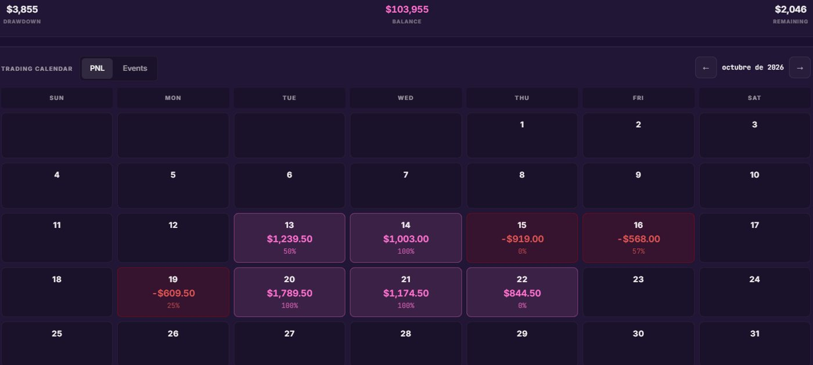
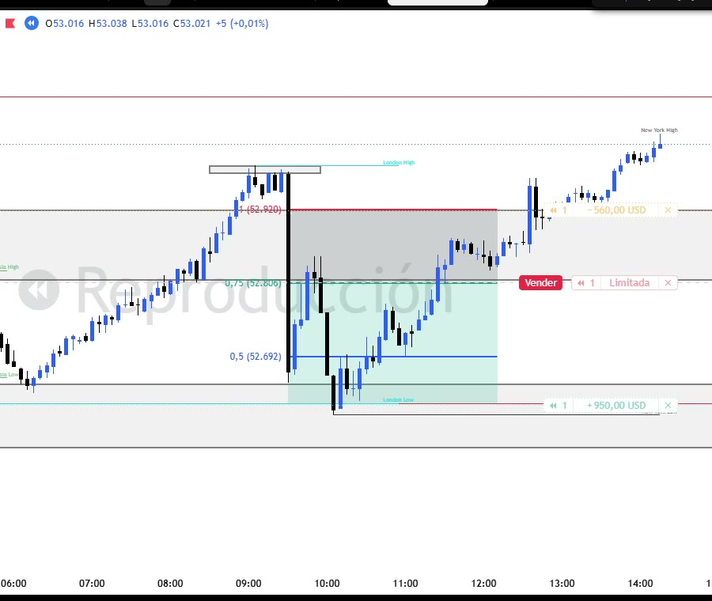
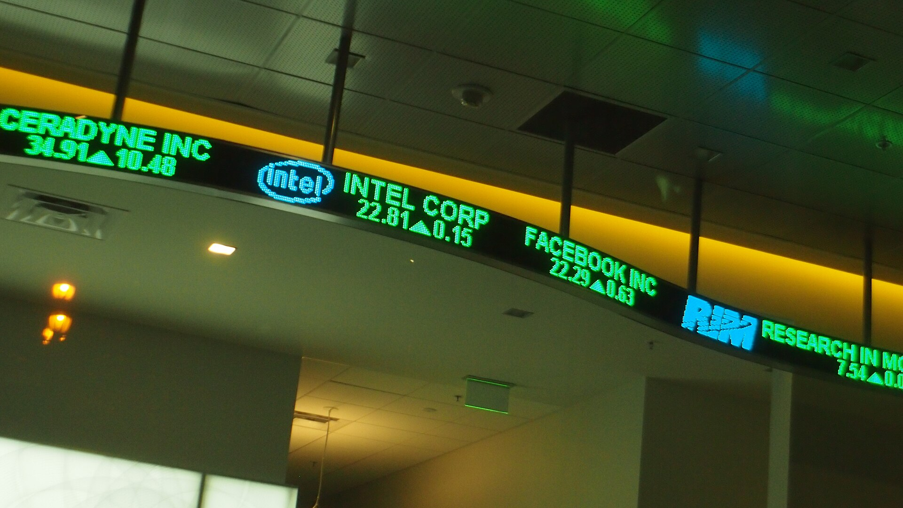

Gratis · by MJ_benzz
Gratis · by MJ_benzz
El diario de trading que te dice cuánto dinero te cuesta romper tus reglas. Anota en 20 segundos, sube de nivel y abre cofres siendo disciplinado.
Toca un día para marcar que rompiste tus reglas y mira cómo cambia.
Ganaste $450 este mes   
Cada trade cuenta como pasó y como habría pasado siguiendo tus reglas. La distancia entre las dos líneas es lo que te cuesta.
Primero escribes tus reglas, tu cuenta y tu riesgo. Una sola vez.
Luego anotas cada trade y dices si seguiste tus reglas.
Al final ves cuánto te costó romperlas, regla por regla, y cuánto te costaría en un año si sigues igual.
Ejemplo de un mes en una cuenta de 50K. Tu diario arma esta lista con tus propias reglas y tus propios números.
Nada. Es gratis y lo va a seguir siendo. La hice para la comunidad de MJ_benzz.
Cuando rompes una regla eliges qué habría pasado con tu plan: no habrías entrado ($0), el mismo trade con tu riesgo de siempre (lo recalcula solo) u otro resultado que escribes tú. El máximo de trades y la pérdida máxima del día los revisa la app sola.
También lo ves. La app te lo dice tal cual: esta vez te salió bien, pero eso fue suerte, no tu sistema. Con el tiempo los números enseñan qué hábito te cuesta de verdad.
Sí. Pones tu drawdown máximo, trailing o estático, y te dice cuánto te queda antes de quemar la cuenta, con tus trades reales y con tus reglas.
En tu cuenta, protegida: solo tú puedes verlos. Entras con tu correo, sin contraseñas, y tu diario se sincroniza entre tu celular y tu computadora. También puedes usarla sin cuenta y todo se queda en tu navegador.
Sí, está hecha para anotar el trade desde el celular justo al cerrarlo, en unos veinte segundos.
No. Es un diario: mide tu disciplina con tus propias reglas. No es asesoría financiera ni da señales.
Te llevamos a tu diario con esa regla ya escrita. Gratis y sin registro.